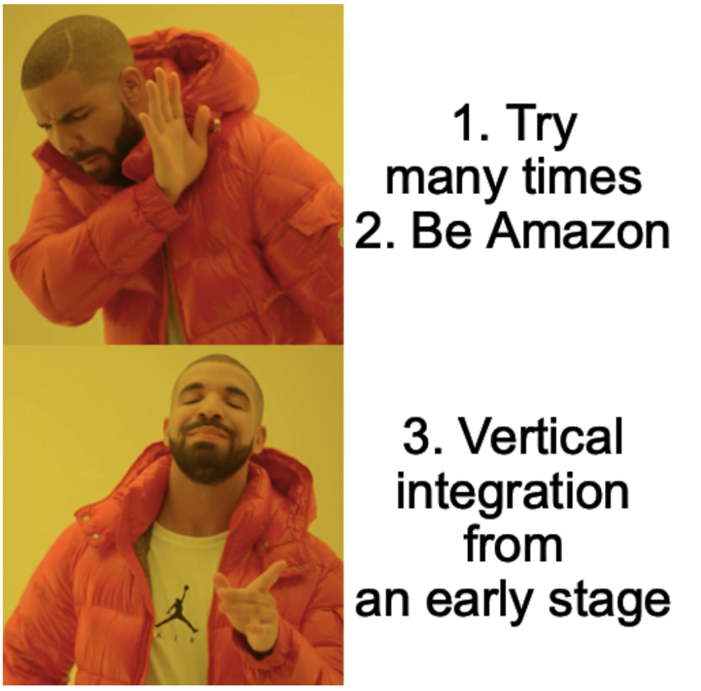

How we'll compete
30 December 2020

People often wonder how cash-strapped start ups (like us) can compete with bigger companies. For SaaS businesses, the answer is to quickly ship a small product that does one thing very well, and to build such a loyal customer base that it’s simply not worth it for larger companies to produce a competing product. Successful SaaS start ups often emerge from untapped niche markets and utilize smaller, more agile workforces to ship their apps faster than anyone else.
For hardware start ups, there is no easy analog to “quickly ship a small product.” The hardware development process is slow and expensive, and for this reason I find the SaaS adoption of the phrase “ship a product” slightly irritating: for them, shipping entails writing code and uploading it to a server; for hardware companies, shipping means manufacturing a physical product and literally shipping it—in the mail—to customers. Furthermore, the product development process is susceptible, at all stages, to being out muscled by companies with more resources. If you design a product, they’ll copy it. If you make it to the manufacturing stage, they’ll manufacture more for less. If you somehow survive to the point of shipping the product, they’ll leverage their superior logistics chain to move their product around the world cheaper and faster.
There is one caveat to the above analysis: it is possible for a start up to win the manufacturing step. It’s difficult, but possible. To do so, a start up must innovate not only on the product level but also on the manufacturing level. They must design new and irreplicable processes through which they make their product.
In the first part of this article, I will analyze the challenges faced by hardware start ups when beginning to develop new technologies. In the second half, I will argue that
by shifting our focus to the development of novel manufacturing methods, rather than focusing solely on product design, we will be able to create a defensible and long-lasting competitive advantage, allowing us to compete directly with large hardware companies.
The challenges
Just the other day,
I read a story about a hardware company who was brutally defeated by Amazon. Their hardware was relatively simple—they made tripods. After a few months of selling their tripods, Amazon decided to copy their design and sell it under the AmazonBasics brand. Eventually, Amazon decided to ban the original company from selling on their platform altogether. It’s a fairly typical capitalist tale, but nevertheless it contains valuable lessons.
Lesson 1: IP isn’t much of a competitive advantage
The tripod company revealed that it had protections for their IP, yet Amazon was able to replicate their technology with no discernable penalty. Perhaps they’ll soon see their day in court, but I don’t expect Amazon to lose that battle. Patent infringement is only a civil offense, rather than an actual crime, meaning the worst case scenario for Amazon is that they pay damages (what they would’ve paid to license the patent) to the tripod company.
However, one of three things will likely happen to prevent this outcome: 1) the tripod company lacks the financial resources to sue for damages; 2) Amazon claims that they’re not infringing on the patent; or 3) Amazon claims that the patent wasn’t valid in the first place. Patent litigation can run from hundreds of thousands of dollars well into the millions, and for most start ups this simply isn’t a viable option. There exist patent lawyers who take cases on contingency, but even then the patent holder still has to contend with scenarios two and three. If the infringer does choose to question the validity of a patent, the patent undergoes a review process lasting multiple years—a time delay which quickly diminishes the returns of pursuing patent litigation for the plaintiff (
source).
Another problem with patents is that they reveal the inner workings of a technology, essentially providing a blueprint for competitors to follow. Elon Musk
famously dislikes patents for this very reason, instead opting for trade secrets to protect SpaceX’s core technology. That said, it’s easy to use trade secrets when your technology is 100 feet tall and disappears into outer space after a single use. Additionally, patents only apply within the United States, meaning companies that plan to ship their product internationally have no recourse against IP theft abroad. The only thing a patent does for them is prevent international competitors from importing duplicate products into the US.
Most successful hardware companies file many patent applications each year: between July 1, 2019 and June 1, 2020, Apple received 1,996 patents, Google received 1,702, and Facebook received 836 (
source). For start ups, however, it is not obvious that patents are worth the monetary investment. Unless a company already has a ton of money and legal resources, having a patent isn’t a very powerful competitive advantage. In fact, filing a patent might be the very thing that allows competitors to steal their technology.
Lesson 2: It’s easy to get beat in the manufacturing stage
Once Amazon had (allegedly) stolen the tripod company’s intellectual property, the game was pretty much over. Amazon had several advantages which allowed them to undercut the price of the original product and push the tripod company out of the market. For one, Amazon already had in place a large manufacturing facility when they began producing tripods. They had, on hand, both the engineers and machinery necessary to ramp up production quickly. The rule of thumb for most hardware products is that you have six months, from when your product hits the market, until your competitors begin shipping an identical product. When your competitor is Amazon, it’s more like six weeks, or less.
Secondly, Amazon was already profitable. They didn’t need to make a profit on tripods to make a profit overall, a fact which they exploited to sell their AmazonBasics knockoff at below the cost of manufacturing. The original tripod company actually admitted that it would have been cheaper for them to buy the Amazon tripod, repackage it, and sell it, than to continue manufacturing their product. This is, of course, a textbook move for any company working towards becoming a monopoly. Undercut the competition until they go out of business, then raise prices to make up for the lost revenue.
Finally, and perhaps most significantly, Amazon owned the distribution channel. This gave them the leverage to outright ban the tripod company from selling on their platform. Of course, the company could have just opened up their own website and sold from there (which I’m guessing they did) but they would still be left with the problem of reworking their marketing and customer acquisition strategy. Their business likely relied on the ease of marketing and selling on the Amazon marketplace, without which customers were less likely to see, let alone buy, their product.
The Solution
When the game is as difficult as capitalism, players have only a few options. The first two I can think of are not so desirable to first time founders running a resource-limited start up. The third one, however, is quite appealing.
The not-so-feasible strategies
The first option is simply to get good at playing the game. Working within the existing rule structure, a player who practices a lot will eventually amass enough knowledge to beat their competitors. We see this with serial entrepreneurs and experienced business people. Often, their first venture is not their most successful. By their second or third, however, they’ve gained enough experience to know how to bring a product to market. They know who to hire, who to take investments from, how to build a supply chain, how to lead a team, how to manage finances, they know the pitfalls to avoid when running a start up. That said, being able to fail multiple times is a luxury afforded to very few. For the most part, only those with preexisting wealth can safely attempt the entrepreneurs’ journey multiple times—the rest of us simply can’t afford to take on that level of risk.
The second option is to cheat. When a company gets big enough, it can bend the rules in its favor. We saw this with Amazon and the tripod company. Amazon was able to leverage its existing manufacturing infrastructure to sell tripods at below market rate. This business strategy was not an option for the original company that Amazon copied. Unfortunately for large companies (and fortunately for the rest of us), once they’re able to do things like that they attract the attention of a much more lethal foe—the US government. Facebook is
the latest example of a tech giant facing accusations of breaking antitrust laws. As far as business problems go, however, that’s a pretty good one to have. I don’t feel much sympathy for those facing monopoly charges.
The better strategy
The third option, and the one which we intend to pursue, is to change the game. Traditionally, the hardware start up narrative is as follows: design a product; build connections with manufacturers and, through them, parts suppliers; hammer out a deal with a distributor; sell the product in big box retail stores or, more recently, on the internet. What if, instead of all that, hardware start ups pursued vertical integration right from the beginning?
What if they didn’t just design the product, but also the manufacturing tools to create the product? What if they pursued IP protections not on the product itself, but on the processes needed to create the product? By shifting the innovation farther up the logistical pipeline, a start up would have a greater chance of withstanding attacks from an established player. By integrating vertically from an early stage, a start up would be able to capture enough revenue to price their product competitively against companies with existing manufacturing infrastructure.
While the idea of “changing the game” certainly isn’t original, I haven’t seen it mentioned much with regards to hardware startups. I can think of a few reasons for the lack of discussion surrounding the strategy of manufacturing innovation for product companies. First, I could simply be reading the wrong blogs. Perhaps hardware start ups have tried this and have written about it, and I’ve just missed it. Second, it could be a losing strategy. Maybe all who have tried it have failed and been hesitant to publicly share the context of their failure. Third, people might dismiss it off the bat as too difficult. Certainly, it is harder to innovate on two fronts—product and manufacturing—than on product alone.
The prevailing wisdom for founders is to focus their efforts as narrowly as possible. This generally results in start ups that work to push out an MVP as fast as possible, leaving the manufacturing a distribution processes as independent subsequent steps. In the past, building a manufacturing facility was an incredibly expensive venture; so much so that it was absurd for start ups to even consider it. In the strategy proposed here, hardware companies are tasked with developing, in essence, two products—the one they intend to sell to customers, and the machinery needed to produce that product. I admit, this is objectively more difficult and time consuming than building solely the main product. The advantage, however, is that it has the side effect of creating a much more defensible business model.
Why don’t more hardware start ups do this?
The short answer is: the venture capital funding model clearly disincentivizes it. If you begin reading start up blogs, you’ll quickly find that “product-market fit” is the best thing an early stage company could hope to achieve. At the frequency with which I encounter this phrase, the words become meaningless. This is usually the time when it is most important to take a step back and analyze what’s really going on.
Simply put, the process of finding product-market fit is equivalent to validating the proposition that customers are willing to pay for a product. However, the underlying reasons for investors’ love of companies with product-market fit are commonly misunderstood. Ultimately, investors care about maximizing returns on their investments across their entire portfolio. Given that
90% of start ups fail, investors know they need an AirBnb — a company with an ultra-high market cap that yields a 100x return on investment. It’s typical for almost all of a VC’s wealth to come from one or two portfolio companies. From this perspective, the name of the game is expected value. Beyond the step of working in an industry with a large market size, the easiest way for a founder to boost the expected value of their company is to demonstrate that customers will pay for their product.
For SaaS businesses, finding product-market fit obviates the vast majority of risk to investors, meaning those pursuing a SaaS venture must find it, and fast. This is why, since everyone seems to equate SaaS and Silicon Valley, the phrase is ubiquitous.
For hardware companies though, the threat of being beaten in the manufacturing stage is as much a risk as the threat of nobody wanting the product in the first place. Often, the latter risk is felt first by hardware developers, and therefore weighted disporportionately in the decision-making process. Early-stage start ups might feel it a waste of time to shore up their defenses before finding product-market fit, as it will not aid in their goal to bring in outside capital. Such an outlook is shortsighted; since nobody gets paid until units are actually sold, both sources of risk are equally important.
The rush to ship an MVP and find product-market fit is intensified by the fact that most hardware start ups operate in a
default dead state, rendering them particularly vulnerable to the allure of investor money. But what may seem like a good plan in the short term could have disastrous consequences in the long run. By foregoing the development of a defensible manufacturing strategy, a successful MVP launch won’t last longer than the time it takes competitors to ramp up their own production, even if the IP is protected.
Specifics — how we plan to execute strategy #3
Why do I feel comfortable revealing our strategy for anyone to copy? Well, any strategy that relies on secrecy to be successful is not defensible in the long run. The best strategies are the ones that relocate the battle to an arena in which a player’s strength is greatest. Our strength is not our business savvy, but our technical prowess. If a competitor wishes to beat us, they’ll have to out-engineer us, rather than out-negotiate us. However, ensuring that the battle is fought purely on technical grounds is easier said than done.
Our ultimate goal is to disincentivize potential competitors from stealing our technology. For the reasons explored above, I’d prefer not to rely on IP protections for this step. Instead, our task is to devise a situation in which, even if they know exactly how our product works, competitors will not be able to sell it for cheaper than us. Assuming that the majority of cost differentiation lies in manufacturing, rather than in distribution, this task amounts to ensuring that no competitor is able to manufacture our product cheaper than we are. Hopefully the plan is becoming clearer now.
There is a tried and true strategy for minimizing manufacturing costs:
vertical integration! I’ve said it before and I’ll say it again, simultaneous innovation on the manufacturing level and product level produces a defensible competitive advantage for hardware start ups. So, how do we innovate in the manufacturing process?
The manufacturing problem for any hardware product concerns three interconnected variables: speed, cost, and scale. The first two, speed and cost, reflect a company’s ability to
execute a given manufacturing routine. One company can beat another in this category through a variety of methods: using cheaper materials, outsourcing to a country with cheaper labor, hiring faster workers, hiring more workers, automating certain processes, vertical integration, etc. The variable of scale, however, reflects a company’s ability to design a manufacturing process. A company that can produce orders of magnitude more product than its competitors doesn’t simply have faster workers, it has fundamentally better processes.
To the uninformed, the difference between making one product and making a million products is simply the degree of parallelization. They assume that once the design for a product is finalized, mass production is achieved by making one product a million times (parallelization in time), or by having a million people make one product each (parallelization in space). The former solution is generally problematic because it takes a very long time, the latter because it is very expensive. In reality, the set of devices that can be mass manufactured quickly and cheaply is an incredibly small subset of the set of devices that can theoretically be built.
To give an example, say that it takes Apple one minute to manufacture one iPhone. Seems pretty quick to make an entire iPhone, no? Well, no. Apple sold 217 million iPhones in 2018, which amounts to 595,000 per day, 24,800 per hour, 413 per minute, and 6.9 per second. The technical design of the iPhone is certainly impressive, but what’s perhaps more impressive is the construction of the manufacturing apparatus capable of producing 6.9 iPhones per second.
Unfortunately, the manfacturing problem is, in some senses, more difficult for us than for Apple. All of their products are identical; each iPhone 12 is the same as the last, for instance. The product we intend to make — a haptic glove — is bespoke to a certain degree. Because our product needs to fit tightly in order to function well, differently sized customers will have mechanically different products. This fact makes it difficult to justify keeping gloves in inventory and shipping them to customers only when ordered. In fact, the customer experience we envision is an extreme version of on-demand manufacturing. We plan to manufacture a product only after a customer has ordered it.
The primary contraint imposed by this desire is speed: to ensure timely delivery to customers, every component of our product will need to be constructed from raw materials in at most an hour, ideally less. When I said innovation on the manufacturing stage, I meant it. It won’t be enough for us to be in control of producing molds; we’ll need to build our own custom injection molding machines. Buying a bunch of 3D printers won’t cut it; I foresee the need for in-house construction of additive manufacturing technology that is currently on the
cutting-edge of academic research. Furthermore, our product will be engineered with special consideration for the assembly process. Any product that can’t be assembled entirely by robots is out of the question. And yes, those robots will be designed and built by us.
An obvious question at this point would be, “how could they possibly afford to do all that?” Well, let us worry about that for now. This is where our technical knowledge will either rise to the occasion or fail us. Should we be able to execute the steps outlined in the preceding paragraphs, potential competitors will feel a strong disincentive to copy our technology, as they will find it difficult to undercut our prices. To beat us, they’ll have to develop technology that delivers more value to customers than our product. Luckily for us, we’ve spent our whole lives preparing for that very challenge.